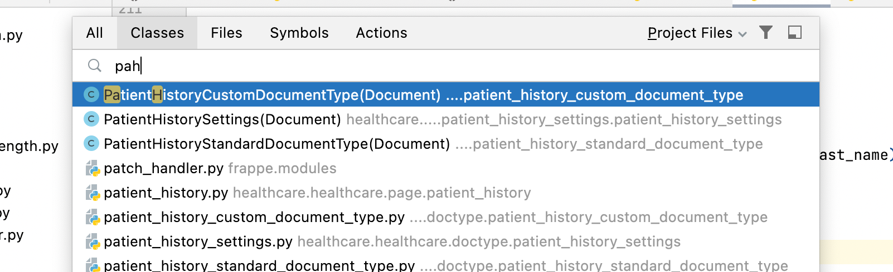

Adding Fuzzy Search To Frappe Framework
Introduction
As software developers, we use fuzzy search a lot especially when using Emacs or any other editors/IDEs. For example to search a file called patient_history.js, in the editor, we can just type pah and editor will narrow it down.

This is quite handy as we can open any file with just few characters.
FF is a low code, open source, web framework in Python and Javascript. All sites built with FF will have a global search bar(aka awesome bar) as shown below. Here, we can search for doctypes, reports, pages etc.

To open Patient History, we have to type almost the entire text in search bar. If we type pah like we have typed in the editor, it won't show any results.

Instead, we can add fuzzy search here so that we can search for any item with just a frew key strokes.
Fuzzy Search
There are many third party packages which implement fuzzy search in programming languages. However we can't use any of these fuzzy search packages directly. These editors internally use a scoring algorithm to rank the results and display results based on score.
It internally considers many factors mentioned below for scoring.
-
Matched letters
-
CamelCase letters
-
snake_case letters
-
Consecutive matching letters
We can come up with a scoring mechanism for these factors and based on the matches, we can rank the results. I have implemented a custom fuzzy search alogirthm based on the above factors but it was slow and results were not good in some cases.
Then I stumbled up this fts_fuzzy_match implementation. This is a reverse engineered implementation of sublime text fuzzy search and it has a detailed scoring mechanism as well. It assigns negative ranking to mismatched letters and bonus points for consecutive matches.
This works well and is as effective as most IDEs search. Now that there is a solid fuzzy search, all we need to do is hook this up in FF.
FF internally has a fuzzy search function and we can directly hook it up here as shown here.
After that, we can search for anything in just few key strokes. For example to open patient history, we can just type pah and it will show results like this.

Conclusion
Fuzzy search in editors/IDEs is quite handy and when we bring to other places like FF or any other search bar, it improves search experience a lot.